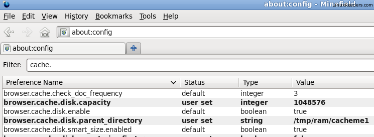

Update For Fedora 15
Firefox will work with the given below procedure.
For Chrome
sudo gedit /usr/local/share/applications/google-chrome.desktop
Change line from
#Exec=/opt/google/chrome/google-chrome %U
TO
Exec=/opt/google/chrome/google-chrome --disk-cache-dir="/tmp/ram/"
OR
You can use following commands for the ease of use.
rm -rf ~/.cache/google-chrome
ln -s /tmp/ram/ ~/.cache/google-chrome
Update For Ubuntu 11.04
Firefox will work with the given below procedure.
For Chrome
sudo gedit /usr/share/applications/google-chrome.desktop
Change line from
#Exec=/opt/google/chrome/google-chrome %U
TO
Exec=/opt/google/chrome/google-chrome --disk-cache-dir=`/tmp/ram/`
OR
You can use following commands for the ease of use.
rm -rf ~/.cache/google-chrome
ln -s /tmp/ram/ ~/.cache/google-chrome
This post is further updated based on comments.
By storing browser cache to ram disk, you can improve browsing speed. Especially if you are surfing all day.
Now a days modern computers are equipped with more than required ram. Part of this RAM can be used for caching purpose.
Also this will spare you from cleaning disk clutter.
By default RAM drive size may / may not be enough. Increase it to 512Mb or whatever size you wish to allot for caching. Use following method to change default ram_size.
Here for example, we are increasing ram_size to 512mb
On Fedora System.
su vi /boot/grub/grub.conf #append ramdisk_size=512000 at the end of kernel parameter. #e.g #Before change kernel /vmlinuz-2.6.35.10-74.fc14.i686 ro root=UUID=dbea17b6-292a-435e-a4d7-d202b772e6aa rd_NO_LUKS rd_NO_LVM rd_NO_MD rd_NO_DM LANG=en_US.UTF-8 SYSFONT=latarcyrheb-sun16 KEYBOARDTYPE=pc KEYTABLE=us quiet #After change kernel /vmlinuz-2.6.35.10-74.fc14.i686 ro root=UUID=dbea17b6-292a-435e-a4d7-d202b772e6aa rd_NO_LUKS rd_NO_LVM rd_NO_MD rd_NO_DM LANG=en_US.UTF-8 SYSFONT=latarcyrheb-sun16 KEYBOARDTYPE=pc KEYTABLE=us ramdisk_size=512000 quiet
On Ubuntu System (UPDATE– 10.10 & above).
vi /etc/default/grub change line GRUB_CMDLINE_LINUX=”" to GRUB_CMDLINE_LINUX=”ramdisk_size=512000″ Save the file and run update-grub
OR
su vi /boot/grub/grub.cfg #append ramdisk_size=512000 at the end of linux parameter. #e.g #Before change linux /boot/vmlinuz-2.6.35-22-generic root=UUID=a54a4a62-f264-4c04-a86f-83addaad2e55 ro quiet splash #After change lnux /boot/vmlinuz-2.6.35-22-generic root=UUID=a54a4a62-f264-4c04-a86f-83addaad2e55 ro ramdisk_size=512000 quiet splash
UPDATE–
For Ubuntu 10.04 use /boot/grub/menu.lst
Also If content above mentioned rc.local does not work use following.
#!/bin/sh -e if [ ! -e /tmp/ram ]; then mkdir /tmp/ram fi mke2fs -q -m 0 /dev/ram0 mount /dev/ram0 /tmp/ram/ chmod 777 /tmp/ram/ -R exit 0
REBOOT YOUR SYSTEM TO LET CHANGE TAKE EFFECT.
As root user, Mount RAM drive as /tmp/ram. Following commands you can save in /etc/rc.local to get executed at every boot.
mkdir /tmp/ram mke2fs -m 0 /dev/ram0 mount /dev/ram0 /tmp/ram/ chmod 777 /tmp/ram/ -R
UPDATE—
OR you may use tmpfs, which is convenient
mount -t tmpfs -o size=512M,mode=0744 tmpfs /tmp/ram1/ chmod 777 /tmp/ram/ -R
Change browser caching location.
Firefox
type about:config in address bar, search for browser.cache.disk.parent_directory. change its location to /tmp/ram/firefox or any other directory if you are going to save Chrome cache on same ram drive. This will help you identify each cache. By default firefox stores cache in cacheme whereas chrome in Cache folder.

Restart firefox, you’ll find new folder in /tmp/ram
Note: for caching to work make sure browser.cache.disk.capacity is set to true
Chrome
For chrome its extremely easy. append –disk-cache-dir=”/tmp/ram/” in launcher
e.g
/opt/google/chrome/google-chrome --disk-cache-dir="/tmp/ram/"
This is all you need, now onwards on every reboot / boot of your computer, ram drive will be created as /tmp/ram. And chrome / firefox will create cache dir.
Change of cache path, does not affect bookmarks, its all stored in $USER folder.
Thanks for the comments.
Its improved post.

{kind=link}
{kind=link}
This is a monumentally over-engineered and idiotic way to try to boost performance. Linux already caches disk reads in spare RAM by default. tmpfs wasn’t made for this purpose at all.
Yes, Linux caches frequently accessed files.
But using ram drive / tmpfs you can get better read / write speed for small web caches. Which definitely improves performance.
This did help a lot, but you may want to updated Uruntu 10.10. you should do the following to updated /boot/grub/grub.cfg as this files is erased and updated with a new one, each time a vmlinuz is updated by the system
>vi /etc/default/grub
change line GRUB_CMDLINE_LINUX=”"
to GRUB_CMDLINE_LINUX=”ramdisk_size=512000″
Save the file and run
>update-grub
This will up /boot/grub/grub.cfg file (Note it will add =512000 for each vmlinuz item) and when the system does an update on vmlinuz the ramdisk_size=512000 will not be removed
Thanks for the comment.
Post updated accordingly
Someone says:
http://groups.google.com/group/mozilla.dev.apps.firefox/msg/7d52d5633bd71e16?pli=1
Can anyone explain the last step but for chromium? That would be very helpful.
for google chrome there is no configuration change.
all you have to do is to mention –disk-cache-dir while calling /opt/google/chrome/google-chrome
if you are looking for chromium, that should be same as google chrome.
There’s no need to modify grub.conf or something else.
Just edit /etc/fstab, and check out the ‘shm’ entry.
Make sure the entry looks something like this-
shm /dev/shm tmpfs nodev,nosuid,defaults,size=1500M 0 0
You ca change the size as per requirements.
And then run the following commands to take whole profile into the RAM-
mv ~/.mozilla /dev/shm/Firefox; ln -s /dev/shm/Firefox ~/.mozilla
After you’ve completed browsing (after closing firefox):
rm ~/.mozilla; mv /dev/shm/Firefox ~/.mozilla
I use a variant of this, with rsync, because I close & open firefox a lot of times.
very nice article, thank you. we must remember that in grub2 (debian 6, ubuntu 10.10, etc), to prevent resetting the kernel line at future upgrades, you must add the option in /etc/default/grub .
Why so much trouble in Linux? Just copy the whole thing to /dev/shm. No need to create any damn filesystem. It also automatically adjusts the size with use.
This is a very roundabout way to create a filesystem in memory. The straightforward way is:
1. Create the mount point once (for example, “sudo mkdir /var/ramdisk”).
2. Add this line to /etc/fstab:
none /var/ramdisk tmpfs mode=1777 0 0
This mounts a memory filesystem in /var/ramdisk on boot. It only uses as much memory as needed to hold the data in it. If you want to limit how much it can grow, use the size= parameter, like: mode=1777,size=500M.
You don’t need a ramdrive. tmpfs was made specifically for this task.
On ubuntu 10.04 /boot/grub/grub.conf does not exist. Assuming that it is /boot/grub/menu.lst you mean, I added the ramdisk option there and it works fine at the moment.
Next problem is that your /etc/rc.local did not work for me. I used this one instead:
#!/bin/sh -e
if [ ! -e /tmp/ram ]; then
mkdir /tmp/ram
fi
mke2fs -q -m 0 /dev/ram0
mount /dev/ram0 /tmp/ram/
chmod 777 /tmp/ram/ -R
exit 0
Thanks anyway for that tip, speeds up my firefox a lot!
Thanks for the comment.
Post updated for 10.04.
Why don’t you use tmpfs ? It does make the configuration available without rebooting.
Thanks For the comment.
Post updated.
If you have a good amount of RAM, the best would be to mount the ramfs as the whole /tmp